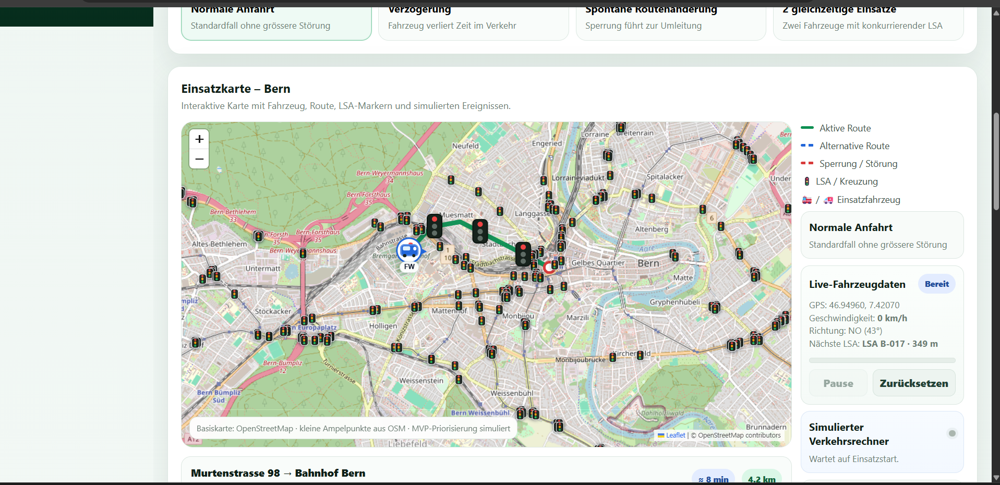

GrenzGrün
Ein BFH-Teamprojekt zur Visualisierung von Einsatzrouten und potenziell priorisierbaren Ampeln in Bern.

Die Idee
Einsatzfahrzeuge können an Kreuzungen Zeit verlieren. GrenzGrün untersucht, wie eine digitale Anwendung Einsatzrouten und eine mögliche Ampelpriorisierung verständlich darstellen kann.
Der Prototyp
Die Webanwendung zeigt eine Route, ein Einsatzfahrzeug und Ampelmarkierungen auf einer interaktiven Karte. Szenarien veranschaulichen unter anderem Verzögerungen und spontane Routenänderungen. Der Verkehrsrechner und die Priorisierung werden simuliert.
Mein Beitrag
Ich beschäftige mich mit den benötigten Datenquellen und Schnittstellen und arbeite am Mockup sowie an der Zielarchitektur. Als Scrum Master unterstütze ich die Planung und Zusammenarbeit im Team.
Meine Erkenntnis
Bei der Konzeption wurde deutlich, wie wichtig es ist, verfügbare Daten und offene Schnittstellenfragen früh zu klären. Eine echte Anbindung an den Verkehrsrechner der Stadt Bern erfordert weitere technische und organisatorische Abklärungen.